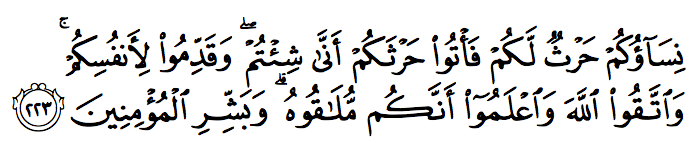

“তোমাদের স্ত্রীরা হলো তোমাদের জন্য শস্য ক্ষেত্র… [সূরা আল-বাক্বারাহ]” — কত অপমানকর কথা! ইসলাম নারীদেরকে মানুষ মনে করে না, চাষের জমি মনে করে? “… তোমরা যেভাবে ইচ্ছা তাদেরকে ব্যবহার করো ” — নারীরা কি পুরুষদের সম্পত্তি যে, যখন যা খুশি করবে? এই হচ্ছে ইসলামে নারীর সম্মান? ইসলাম না বড় গলায় বলে যে, এটা নারীদের অধিকার দিয়েছে? এই হচ্ছে তার নমুনা?
আজকাল একদল নাস্তিক এবং নারীবাদীরা সূরা আল-বাক্বারাহ’র এই আয়াতটি ব্যবহার করে ইসলামকে নারীদের জন্য একটি বর্বর, নিষ্ঠুর, পুরুষতান্ত্রিক ধর্ম বলে অপপ্রচার চালায়। আসুন দেখি কু’রআন আসলে কী বলে, আর তারা কু’রআনকে দিয়ে কী বলায়—

তোমাদের স্ত্রীরা হচ্ছে তোমাদের জন্য শস্যক্ষেত। তাই তোমাদের শস্যক্ষেতে যাও, যেভাবে তোমরা চাও। নিজেদের জন্য আগামী দিনের ব্যবস্থা করো। আর আল্লাহর تعالى প্রতি সাবধান! জেনে রেখো তোমরা তাঁর সামনা সামনি হতে যাচ্ছো। আর যারা পূর্ণ বিশ্বাসী হয়ে গেছে, তাদেরকে সুসংবাদ দাও। [আল-বাক্বারাহ ২২৩]
নারীবাদী এবং নাস্তিকরা নানা বিকৃত উপমা দিয়ে বোঝানোর চেষ্টা করে যে, কু’রআন নারীদেরকে কতটা নিচু মনে করে, মানুষের সমান মর্যাদা দেয় না, পুরুষদেরকে স্ত্রীদের সাথে যা খুশি করার অধিকার দেয় ইত্যাদি। তাদের এইসব নোংরা উপমা পড়ে মুসলিমরাও ঘাবড়ে যান। অনেক মুসলিম নারী সেই সব অপব্যাখ্যা পড়ে কু’রআনকে খারাপভাবে দেখা শুরু করেন। তারপর তার এবং আল্লাহ تعالى সম্পর্কের মধ্যে ফাটল ধরা শুরু হয়ে যায়।
ফসল, কৃষক, রাখাল, গবাদি পশু এগুলো সম্পর্কে আজকাল আধুনিক মানুষদের এক ধরনের নিচু ধারণা জন্মেছে। কংক্রিটের জঙ্গলে বাস করা আধুনিক মানুষরা নিজেদেরকে এসব থেকে ঊর্ধ্বে মনে করেন। তারা মনে করেন: বাসে ঝুলে, গাড়িতে ঘণ্টার পর ঘণ্টা জ্যামে বসে থেকে এক কংক্রিটের বাক্স থেকে বের হয়ে আরেক কংক্রিটের বাক্সে গিয়ে, সারাদিন কয়েদির মতো কাজ করে, তারপর ধুঁকে ধুঁকে বাসায় ফিরে আসাটা হচ্ছে অত্যন্ত সম্মানের কাজ। কিন্তু খোলা ক্ষেতে ঝির ঝির বাতাসে কাজ করা, বিশাল নদীতে নৌকা বেয়ে মাছ ধরা, সবুজ মাঠে গরু-ছাগল চরানো —এগুলো হচ্ছে যত সব অশিক্ষিত, নিচু শ্রেণীর মানুষদের কাজ। একারণে কু’রআনে যখন কৃষক, রাখাল, শস্যক্ষেত এসবের উদাহরণ দেওয়া হয়, তারা মনে করেন কু’রআন হচ্ছে সেকেলে একটা বই, গ্রামের লোকদের পড়ার জন্য। তাদের মতো আধুনিক সমাজের মানুষের স্ট্যাটাসের সাথে এটা মানায় না। কু’রআনের নতুন ভার্শন বের হওয়া দরকার।
অথচ এই মানুষগুলো সকালের নাস্তায় যা খান, তা আসে শস্যক্ষেত থেকে, বহু কৃষকের অবদান থেকে। তাদের বাচ্চাদের দুধ আসে কোনো রাখালের গরুর কাছ থেকে। কফি আসে কোনো কৃষকের কফি ক্ষেত থেকে। দুপুরের লাঞ্চে মাছ-মাংস আসে জেলে, রাখালের কাছ থেকে। যেই চেয়ারে বসে আরাম করে কাজ করেন, সেই চেয়ারের লেদার এসেছে গরুর চামড়া থেকে, যেই গরুকে কোনো রাখাল অনেক কষ্ট করে লালন-পালন করেছে। যেই বিছানায় আরাম করে শুয়ে থাকেন, তার তুলা এসেছে তুলা চাষির কাছ থেকে। বাথরুমে গিয়ে যেই টয়লেট পেপার ব্যবহার করেন, তা এসেছে কোনো গাছের ছাল থেকে। আধুনিক জীবনে আমরা প্রতিদিন যত কিছুই ব্যবহার করি, সবকিছুর উৎপত্তি হয় বন বা শস্যক্ষেতে, না হয় নদী-নালা-সমুদ্রে, না হয় কোনো খনিতে। যেই পেশাগুলোকে আমরা হেয় করে দেখি, সেই পেশাগুলোর উপর আধুনিক মানুষের আধুনিকতার ভিত্তি দাঁড়িয়ে আছে।
কেন নারীদেরকে চাষের জমির সাথে তুলনা করা হলো?
আমরা যদি স্ত্রীকে জমি এবং স্বামীকে কৃষকের সাথে তুলনা করে দেখি, তাহলে দেখবো এই উপমাটা কত সুন্দর—
একজন কৃষকের যাবতীয় চিন্তা এবং মনোযোগ হচ্ছে তার জমিকে ঘিরে। সে সারাদিন চিন্তা করে তার জমির জন্য কী করতে হবে, যেন সে ঠিকমতো ফসল পেতে পারে। সে প্রতিদিন যত্ন করে জমি থেকে আগাছা পরিষ্কার করে। জমি শুকিয়ে গেলে পানি দেয়। জমিতে যেন পুষ্টির অভাব না হয়, সে জন্য ঠিকমতো সার দেয়। তার সঞ্চয়ের একটা বড় অংশ চলে যায় জমির পেছনে। তারপর যখন সময় হয়, তখন সে জমিতে বীজ বুনে দেয়। তারপর থেকে শুরু হয় জমির আরও বেশি যত্ন। জমিতে যেন পুষ্টির অভাব না হয়, পানির অভাব না হয়, আগাছা না জন্মায়, দুষ্ট কেউ এসে জমির ক্ষতি করতে না পারে, সে জন্য তার ব্যস্ততার সীমা থাকে না। প্রতিদিন ঘুম থেকে উঠে তার প্রথম চিন্তা হচ্ছে জমি কেমন আছে? সারাদিন জমির জন্য কাজ করে বাসায় আসার পরেও মন পড়ে থাকে জমিতে। শেষ পর্যন্ত যখন জমি থেকে চারা বের হওয়া শুরু হয়, তখন তার খুশি কে দেখে! চারাগুলো বড় না হওয়া পর্যন্ত সেই জমির জন্য তার কত যত্ন, কত ছোটাছুটি। আর যখন ফসল কেটে ঘরে তোলার দিন আসে, সে দিনের খুশি, আনন্দ, সাফল্যের অনুভূতি যে কত তীব্র, তা শুধু একজন কৃষকই জানে।
একজন স্বামীর চিন্তা এবং পরিকল্পনার একটা বড় অংশ হচ্ছে তার স্ত্রীকে নিয়ে। স্ত্রীর যেন খাওয়া-পরার অভাব না হয়, সে জন্য সে সারাদিন পরিশ্রম করে। স্ত্রীর অসুখ হলে ছুটাছুটি করে ডাক্তারের কাছে নিয়ে যায়। যত খরচ লাগুক চিকিৎসা করায়। তার সঞ্চয়ের একটা বড় অংশ চলে যায় স্ত্রীর পেছনে। সুন্দর ভবিষ্যতের আসায় সে স্ত্রীর কাছে বীজ বুনে দেয়। তারপর স্ত্রী যখন সন্তান সম্ভবা হয়, তখন শুরু হয় আরও বেশি যত্ন। ঠিকমতো খাচ্ছে তো? ঠিকমতো ঘুমাচ্ছে তো? বাচ্চা যথেষ্ট পুষ্টি পাচ্ছে তো? সারাদিন অফিসে কাজ করলেও, কিছুক্ষণ পর পর ফোন করে খোঁজ নেয় স্ত্রী ঠিক আছে কিনা। তারপর যখন সন্তান জন্ম হওয়ার তারিখ ঘনিয়ে আসে, তখন তার খুশি দেখে কে! কত ছোটাছুটি, কত পরিকল্পনা, ফার্নিচার সরানো, ঘর গোছানো। শেষ পর্যন্ত যেদিন বাচ্চার ডেলিভারি হয়, সে দিনের খুশি, আনন্দ, সাফল্যের অনুভূতি যে কত তীব্র, তা শুধু একজন স্বামীই জানে।
স্ত্রীদেরকে শস্য ক্ষেতের সাথে তুলনা করে আল্লাহ تعالى যথার্থই উপমা দিয়েছেন। এর থেকে সুন্দর উপমা আর কিছু হতে পারে না।
তাই তোমাদের শস্যক্ষেতে যাও, যেভাবে তোমরা চাও
“যেভাবে তোমরা চাও” — এই অংশটুকুর বিকৃত অর্থ করে অনেকে দাবি করেন যে, সমকামীরা যা করে, সেরকম একটা জঘন্য কাজ কু’রআন সমর্থন করছে। প্রথমত, আল্লাহ تعالى প্রথম আয়াতেই পরিষ্কার করে বলে দিয়েছেন, “তোমাদের স্ত্রীরা হচ্ছে তোমাদের জন্য শস্যক্ষেত।” উদ্দেশ্যই হচ্ছে শস্য উৎপাদন করা, বাচ্চার জন্ম দেওয়া। যা করলে বাচ্চা জন্ম হওয়ার কোনো সম্ভাবনা নেই, সেদিকে যাওয়ার কথা বলা হয়নি।[১২][১৭][৪] প্রথম আয়াত পড়েও যাদের পর্ণদুষ্ট মাথায় নোংরা চিন্তা ঘুরবে, তাদের জন্য আবারো আল্লাহ تعالى বলেছেন, “তাই তোমাদের শস্যক্ষেতে যাও”। পর পর দুইবার শস্যক্ষেত কথাটা বলে তিনি تعالى আমাদের মাথায় পরিষ্কার করে দিচ্ছেন যে, আমাদের যাওয়ার একমাত্র বৈধ জায়গা হচ্ছে যেখানে গেলে বাচ্চা হয়। এরপরও যাদের মাথায় ঢুকবে না, তাদেরকে তৃতীয় বারের মতো পরিষ্কার করে দিচ্ছেন, “নিজেদের জন্য আগামী দিনের ব্যবস্থা করো।” যেই পথে গেলে আগামীর কোনো সম্ভাবনা নেই, সেই পথের দিকে যেতে আল্লাহ تعالى বলেননি। তারপরেও যারা যাবে, তাদের জন্য শেষ সাবধান বাণী, “আর আল্লাহর تعالى প্রতি সাবধান! জেনে রেখো তোমরা তাঁর সামনা সামনি হতে যাচ্ছো।” কিয়ামতের দিন আল্লাহর تعالى সামনে দাঁড় করিয়ে যখন আমাদের কুকীর্তিগুলোর ভিডিও প্লে-ব্যাক করে দেখানো হবে, সেদিন আমরা কী পরিস্থিতিতে পড়বো, সেটা যেন চোখ বন্ধ করে বার বার কল্পনা করি। তাই কোনো রকম নোংরা কাজ করার আগে যেন একশ বার ভাবি সেই দিনের কথা, যেদিন আল্লাহর تعالى সামনে আমরা দাঁড়িয়ে থাকবো, এবং আমাদের কাজগুলোর প্লে-ব্যাক দেখে আমরা লজ্জায়, অপমানে মাটিতে মিশে যেতে চাইবো।
এরপরেও অনেকে যুক্তি দেখান, “দেখুন ভাই, আল্লাহ تعالى বলছেন আমরা যেভাবে ইচ্ছা যেতে পারি। তিনি তো মানা করেননি কোথায় যাওয়া যাবে না। সুতরাং সব জায়গাতেই যাওয়া যাবে।” আল্লাহ تعالى বলেননি, শস্যক্ষেতের পাশে যে একটা ময়লার গর্ত আছে, সেখানেও আমরা যেতে পারি। যাওয়ার জায়গা একটাই, কিন্তু যাওয়ার পদ্ধতি আমাদের পছন্দ মতো হতে পারে। এভাবে আল্লাহ تعالى অনেক কুসংস্কারকে বাতিল করে দিয়েছেন। হাজার বছর আগে থেকে শুরু করে আজকাল গ্রামে গঞ্জে অনেক কুসংস্কার প্রচলিত আছে যে, বিশেষ কিছুভাবে গেলে তারপর জন্ম নেওয়া বাচ্চার চোখ ট্যারা হয়, বাচ্চা বিকলাঙ্গ হয়। এগুলো সব ভ্রান্ত ধারণা।[১২][১৭]
স্ত্রীদের কাজ কি শুধুই বাচ্চা জন্ম দেওয়া?
বিংশ শতাব্দীতে এসে, বিশেষ করে ষাট দশকে নারীবাদীদের উদ্ভবের পর হঠাৎ করে নারীদের মধ্যে একটা পরিবর্তন ছড়িয়ে পড়ে। তারা প্রশ্ন করা শুরু করেন, “নারীদের জীবনের উদ্দেশ্য কি শুধুই বাচ্চা জন্ম দেওয়া? কোন দিকে থেকে নারীরা পুরুষদের থেকে পিছিয়ে আছে যে, নারীদেরকে ঘরে বসে শুধু বাচ্চা জন্ম দিতে হবে? নারীরা আজকাল বড় বিজ্ঞানী হচ্ছে, রাজনীতিবিদ হচ্ছে, বড় বড় কোম্পানির প্রধান হচ্ছে। তাহলে কেন নারীদেরকে বাচ্চা জন্ম দেওয়ার দিকে এত গুরুত্ব দিতে হবে? আধুনিক যুগের নারীদেরকে সাথে আগেকার যুগের নারীদের এক করে দেখলে হবে না। এখন যুগ বদলেছে। আগে ক্যারিয়ার হবে, তারপরে বাচ্চার চিন্তা করা যাবে। বাচ্চার জন্য নিজের ক্যারিয়ার নষ্ট করবো কেন?”
আমরা লক্ষ করলে দেখবো: প্রকৃতিতে প্রতিটি প্রাণীর স্ত্রী প্রজাতিকে বানানো হয়েছে বাচ্চা জন্ম দেওয়ার জন্য। তার শারীরিক গঠনে পার্থক্য, মানসিকতার ভিন্নতা, আবেগ, অনুভূতি, চাওয়া-পাওয়া, হরমোন, মেটাবোলিজম, পরিপাকতন্ত্রের ভিন্নতা — সব কিছু হচ্ছে ঘুরে ফিরে বাচ্চা জন্ম দেওয়ার জন্য বিশেষভাবে তৈরি করা। পুরুষদের থেকে নারীদের তিনটি গুরুত্বপূর্ণ পার্থক্য রয়েছে — মাসিক, সন্তান জন্ম দান, বাচ্চার দুধ। এগুলোর প্রত্যেকটি নারীদের আচরণ এবং আবেগকে ব্যাপকভাবে প্রভাবিত করে। নারীদের থাইরয়েড পুরুষদের থেকে বড় এবং বেশি সক্রিয়, যা বাচ্চা হওয়ার সময় আরও বড় হয়ে যায় শরীরের রোগ প্রতিরোধ ক্ষমতা বাড়াতে। নারীদের রক্তে শতকরা ২০ ভাগ পানি বেশি, যার কারণে নারীরা অপেক্ষাকৃত দ্রুত ক্লান্ত হয়ে যায়। মাংসপেশির শক্তির দিক থেকে পুরুষদের থেকে নারীদের শক্তি গড়ে ৫০% কম। নারীদের হৃৎপিণ্ড পুরুষদের থেকে বেশি বার স্পন্দন করে (মিনিটে ৮০ বনাম ৭২)। বাচ্চা হওয়ার সময় হৃৎপিণ্ড আরও দ্রুত স্পন্দন করে, রক্ত চাপ বেড়ে যায় যেন দেহে বেশি রক্ত সরবরাহ করে। নারীদের হাঁটুর ডিজাইন পুরুষদের থেকে কিছুটা ভিন্ন। যার কারণে দৌড় ঝাপের খেলায় নারীদের হাঁটুর ইনজুরি পুরুষদের থেকে ২-৫ গুণ বেশি হয়। এই বিপুল পরিমাণের পার্থক্য উপেক্ষা করে নারীরা যদি সবদিক থেকে পুরুষদের অনুরূপ হতে চায়, তাহলে সেটা একটি প্রকৃতি বিরুদ্ধ কাজ হবে। অনেকে জোর করে নিজের উপর নানা অত্যাচার করে আপ্রাণ চেষ্টা করেন পুরুষদের মতো জীবন যাপন করতে, ক্যারিয়ার গড়তে। তারপর তাকে বাকি জীবনটা সেটার মাসুল দিতে হয়।
প্রতিটি স্ত্রী প্রাণী তার সারাজীবন বিকিয়ে দেয় তার ভবিষ্যৎ প্রজন্ম রেখে যাওয়া জন্য। তার বাচ্চাদের সুস্থভাবে বড় হওয়া নিশ্চিত করার জন্য যা করার দরকার তাই করে। প্রাণিজগতে স্ত্রী প্রজাতিরা তাদের বাচ্চাদের জন্য এতটা নিবেদিত হওয়ার কারণেই প্রাণিজগতের ভারসাম্য এখনো বজায় আছে, প্রজাতিগুলো বিলুপ্ত হয়ে যায়নি। আজকে যদি কোনো প্রজাতির স্ত্রী-প্রাণীদের মধ্যে নারীবাদীদের উদ্ভব হয়, তারপর তারা ‘জীবন উপভোগ করো আগে, বাচ্চা পরে’ —এইসব চিন্তা করা শুরু করে, তাহলে সেই প্রজাতির সংখ্যা ধ্বসে যাবে। যেরকম কিনা মানব জাতির বেলায় ইতিমধ্যে শুরু হয়ে গেছে।
মায়ের বাইরে কাজ করার কারণে বাচ্চার উপর প্রভাব
Brooks – Gunn, Han and Waldfogel (2002) তাদের বহু বছরের গবেষণা থেকে দেখান যে, বাচ্চার নয় মাস হওয়ার আগেই যাদের মা ফুলটাইম কাজে ফিরে গেছেন, সেই সব বাচ্চাদের তিন বছর হওয়ার পর বুদ্ধিবৃত্তিক পরিপক্বতা অন্যদের থেকে কম হয়েছে। অপেক্ষাকৃত কম পড়তে পারা, ভাষা কম শেখা, গণিতে দুর্বল হওয়া — এগুলো হওয়ার পেছনে তাদের মায়েদের ফুলটাইম কাজে ফিরে যাওয়াটা প্রধান কারণ। তাদের গবেষণা থেকে বেরিয়ে আসে যে, বাচ্চাদের প্রথম এক বছর ঠিকভাবে বড় হয়ে ওঠাটা পরবর্তীতে তাদের বুদ্ধিবৃত্তিক উন্নতির জন্য সবচেয়ে জরুরি। সেই সময় মায়ের কাছ থেকে ঠিকমতো আদর, উত্তেজনা না পেলে, তাদের বুদ্ধিবৃত্তিক গঠনে নেতিবাচক প্রভাব পড়ে।
Blau (1999) তার গবেষণা থেকে দেখান যে, মায়ের ফুলটাইম কাজের কারণে সংসারে যে বাড়তি আয় হয়, তা থেকে বাচ্চাদের মানসিকতার উন্নয়নে কোনো উল্লেখযোগ্য প্রভাব পড়ে না। বরং বাচ্চাদের উন্নতিতে সবচেয়ে বড় প্রভাব ফেলে মা কোন জাতির, মায়ের শিক্ষাগত যোগ্যতা, এবং স্বামীর সাথে তার সম্পর্কের অবস্থা। Harvey (1999) তার গবেষণা থেকে দেখান যে, নিম্নবিত্তদের মধ্যে মায়ের বাইরে কাজ করার ফলে সংসারে সচ্ছলতা আসলে বাচ্চাদের উন্নতিতে ইতিবাচক ভূমিকা দেখা যায়। কিন্তু মধ্যবিত্ত, উচ্চবিত্তদের মধ্যে মায়ের বাইরে কাজের ফলে নেতিবাচক ফলাফল প্রায় সব ক্ষেত্রেই দেখা যায়।
Ora et. al. (2006) গবেষণা করে দেখান যে, যে সব বাচ্চাদের মা বাইরে কাজ করেন, সেই সব বাচ্চাদের কিন্ডারগার্ডেন-এ মানিয়ে নিতে বেশি কষ্ট হয়। একইসাথে ডে-কেয়ারে সেই সব বাচ্চাদের অন্য বাচ্চাদের সাথে মানিয়ে চলার ক্ষেত্রেও সমস্যা বেশি দেখা যায়। Aizer (2004) দেখান যে, মায়ের শাসন ছাড়া বেড়ে ওঠা বাচ্চাদের অসামাজিক কাজে জড়িয়ে পড়ার সম্ভাবনা বেশি হয়, এবং তাদের মধ্যে উগ্রতা এবং ঝুঁকিপূর্ণ কাজ করার প্রবণতা বেশি দেখা যায়। Brackett et al. (2004) দেখান যে, যে সব বাচ্চাদের বুদ্ধিবৃত্তিক পরিপক্বতা বেশি হয়, তারা নিজেদের ক্ষতি হয় এমন কাজ কম করে, এবং নেতিবাচক আচরণ কম দেখা যায়। Hock et al. (2004) দেখান যে, বাচ্চা এবং মায়ের ভেতরে উদ্বেগ, অস্থিরতা, দুশ্চিন্তা করার প্রবণতার সাথে সরাসরি সম্পর্ক রয়েছে মায়ের থেকে বাচ্চার আলাদা থাকার সাথে। এই অস্থিরতা থেকে দুশ্চিন্তা, হতাশা এবং অপরাধবোধের জন্ম হয়। Koschanska (2001) দেখান যে, যে সব ছোট বাচ্চারা নিরাপত্তাহীনতার মধ্য বড় হয়, তাদের মধ্যে অন্য বাচ্চাদের থেকে উল্লেখযোগ্য বেশি নেতিবাচক আবেগ, যেমন ভয়, ভীতি, রাগ দেখা যায়।
Propper (1972) গবেষণা করে দেখেন যে, যে সব হাই স্কুলের ছেলেমেয়েদের মা বাইরে কাজ করে, বাবা-মা’র সাথে সেই সব ছেলেমেয়েদের বিরোধের হার উল্লেখযোগ্য বেশি। McCord et al. (1963) গবেষণায় দেখা যায়, ১০-১৫ বছরের ছেলেরা তাদের মায়ের বাইরে কাজ করাটাকে অনেকটা ‘সন্তানদের পরিত্যাগ’ করা হিসেবে দেখে। এছাড়াও সেই গবেষণা দেখায় যে, যে সব পরিবারের মধ্যে সমস্যা রয়েছে, সেই পরিবারে মায়েদের কাজ করার কারণে ছেলে সন্তানদের বখাটে হয়ে যাওয়ার প্রবণতা উল্লেখযোগ্য হারে বেশি। Hoffman (1974) দেখান যে, কিশোর বয়সের বখাটে হয়ে যাওয়ার সাথে মায়ের বাইরে কাজ করার সরাসরি সম্পর্ক রয়েছে।
তাহলে নারীরা কি সবাই ঘরে বসে থাকবে?
নারীদেরকে একদম কাজ বন্ধ করে দিতে কেউ বলছে না। বরং বহু গবেষণায় দেখা গেছে, যে সব মায়েরা পার্টটাইম কাজ করেন, তাদের বাচ্চাদের মানসিক পরিপক্বতা বেশি হয়, তারা মানুষের সাথে বেশি ভালো করে মেশে এবং তাদের চিন্তা-ভাবনার পরিধি বাড়ে। কিন্তু সমস্যা হচ্ছে ফুলটাইম কাজে। বিশেষ করে যাদের বাচ্চা ছোট। ঘরে ছোট বাচ্চা রেখে, কাজের লোক, আত্মীয়ের কাছে বাচ্চা বড় হতে দেওয়ার থেকে মায়ের কাছে বাচ্চা বড় হওয়াটা যে বাচ্চার জন্য বেশি ভালো — এই কথা যেকোনো বিচক্ষণ ও সুস্থ মস্তিস্কের মহিলা স্বীকার করবেন।
কিন্তু তারপরও যথেষ্ট সচ্ছলতা থাকা সত্ত্বেও যখন কিছু মা তাদের দুধের বাচ্চাকে অন্যের কাছে রেখে ফুলটাইম কাজ করতে চলে যায়, তখন বুঝে নিতে হবে সফলতার মাপকাঠি বলতে তারা শুধু অর্থ উপার্জন এবং পেশাগত খ্যাতিকেই বোঝে। একটি মানব শিশুকে লালন-পালন করে সুসন্তান হিসাবে গড়ে তোলা যে কত বড় সাফল্য, নিজ ও পরিবারের ইহকাল-পরকালের জন্য কত বড় নি‘আমত —এটা তারা বুঝতে ব্যর্থ হয়েছে। একটি শিম্পাঞ্জির বাচ্চার সঠিক বর্ধনের জন্য জন্মের পর থেকে কমপক্ষে আট বছর পর্যন্ত মায়ের সাথে নিবিড় সময় কাটানোর প্রয়োজন হয়। এর আগে যদি কোনো বাচ্চা মা হারা হয়, তাহলে জঙ্গলে বেঁচে থাকা তাদের জন্য দুরূহ হয়ে পরে। সেখানে একটি মানবশিশুর সুষ্ঠু লালন-পালনে একজন মায়ের কতটুকু সময় দেয়া প্রয়োজন, তা সহজেই অনুমেয়। বিশেষ করে আজকের যুগে, যেখানে মানুষরূপী পশুর সংখ্যা আশঙ্কাজনক হারে বেড়ে যাচ্ছে, আর শহরগুলো বাচ্চাদের জন্য জঙ্গলের থেকেও বেশি ভয়ঙ্কর হয়ে যাচ্ছে। কাজের লোক এবং আত্মীয়দের কাছে ছোট বাচ্চা রেখে গেলে, তারা বাচ্চাদের সাথে কী পাশবিক আচরণ করে, সেটার গোপন ক্যামেরায় ধারন করা ভিডিও ফুটেজ দেখলে বোঝা যায়: প্রগতির নামে আজকে আমরা কত গভীর অন্ধকার গর্তের দিকে পা বাড়িয়েছি।
কেন নারীরা বাইরে কাজ করতে চায়?
নারীরা বাইরে কাজ করার জন্য সাধারণত যেসব যুক্তি দেখান তা হচ্ছে: যদি স্বামী মারা যায়, তাহলে সে তো সন্তানদের নিয়ে পথে বসবে? যদি স্বামী তাকে ছেড়ে চলে যায়, তখন কী হবে? যদি স্বামী তাকে সম্পত্তি না দিয়ে সব তার পক্ষের আত্মীয়দেরকে দিয়ে দেয়, তখন কী হবে? যদি সন্তানরা বড় হয়ে মা’র যোগ্যতা না থাকার কারণে তাকে সম্মান না করে, অন্য চাকুরীজীবী মায়েদের থেকে তাকে ছোট মনে করে? এই অপমান মা হয়ে সে কীভাবে সহ্য করবে? —এগুলো তাদের কাছে এতটাই আতংকের যে, তারা ‘সন্তানদের ভবিষ্যতের নিশ্চয়তার’ জন্য প্রতিদিন নিজের এবং সন্তানদেরই জীবনের ঝুঁকি নিয়ে, সন্তানদেরই মানসিক বিকাশকে ঠিকভাবে হতে না দিয়ে বাইরে কাজে বেরিয়ে পরে। এর পেছনে তারা যুক্তি দেখায় যে, বাইরে কাজ করলে যে সন্তানদের ক্ষতি হবে, বা নিজের কোনো ক্ষতি হবে, তার সম্ভাবনা খুব কম। কিন্তু কাজ না করলে যে স্বামীজনিত সমস্যা কত বেশি হারে হয়, নারীদের কত বেশি কষ্ট করতে হয়, তা প্রতিদিন খবরের কাগজ খুললেই দেখা যায়।
অথচ সঠিক পরিসংখ্যান নিলে দেখা যায়, নারীদের বাইরে কাজ করার কারণে বাচ্চাদের ব্যাপকহারে ক্ষতি হচ্ছে, ব্যাপকহারে সামাজিক সমস্যা ছড়িয়ে পড়ছে, আরও বেশি হারে ঘর ভাংছে, ছেলে-মেয়ে নষ্ট হয়ে যাচ্ছে, আরও বেশি হারে সামাজিক অধঃপতন হচ্ছে, প্রতি প্রজন্মে নৈতিক অধঃপতন আগের প্রজন্ম থেকে বহুগুণে বাড়ছে ইত্যাদি। গত কয়েক যুগ ধরে পাশ্চাত্যের দেশগুলোতে বিশ্ববিদ্যালয় পর্যায়ে গবেষণা করে দেখানো হচ্ছে নারীদের বাইরে ফুলটাইম কাজ করার কুফল কতখানি। কিন্তু তারপরেও নারীবাদীরা গলার জোরে তাদের মতকে প্রতিষ্ঠা করার জন্য মিডিয়ার প্ররোচনায় জনসাধারণকে বিভ্রান্ত করে যাচ্ছে।
একইসাথে আমাদের এটাও দেখতে হবে, কেন আমরা এমন একটি সমাজ তৈরি করেছি, যেখানে নারীরা ছোট বাচ্চাদেরকে ঘরে রেখে সারাদিন বাইরে কাজ করতে যেতে চায়? কেন আমরা তাকে সেই নিরাপত্তা দিতে পারিনি যে, স্বামী যদি মারা যায় বা স্বামী যদি ছেড়ে চলে যায়, তাহলে তার ভবিষ্যৎ নিয়ে দুশ্চিন্তা করতে হবে না, রাষ্ট্র তার যাবতীয় দেখাশোনার দায়িত্ব নিয়ে নেবে? একটি ইসলামিক রাষ্ট্রে একজন মা’র তার বাচ্চাদেরকে নিয়ে পথে বসতে হয় না। কিন্তু আজকে ইসলামিক রাষ্ট্র বেশিরভাগ দেশে নেই। মধ্যবিত্ত, নিম্নবিত্তের পরিবারগুলোতে নারীদের উপার্জন, যথেষ্ট সম্পত্তি না থাকলে, স্বামীর অনুপস্থিতিতে তাদেরকে অনেকটা পথেই বসতে হয়। আমাদেরকে আগে এই সমস্যার সমাধান করতে হবে। এমন একটি সমাজ এবং রাষ্ট্র তৈরি করতে হবে, যেখানে নারীরা নিজেদের এবং সন্তানদের ভবিষ্যৎ নিয়ে এতটাই আতংকে না থাকে যে, বাচ্চাদেরকে ঘরে রেখে সে ভবিষ্যতের নিরাপত্তার জন্য সারাদিন বাইরে কাজ করতে বের হয়ে যেতে বাধ্য হয়।
অনেক সময় আমরা কোনো কিছুকে অবশ্যম্ভাবী ঝুঁকি মনে করে সিদ্ধান্তে ঝাঁপিয়ে পড়ার আগে ভালো করে পরিসংখ্যান নিয়ে দেখি না যে, সেই ঝুঁকিটার সম্ভাবনা আসলেই কতখানি। যেমন, স্বামী অকালে মারা গিয়ে সন্তানদের নিয়ে পথে বসার ঝুঁকিটা স্ত্রীদের কাছে একটা আতঙ্ক। তারা এটাকে এতটাই নিশ্চিত ঝুঁকি মনে করেন যে, সে জন্য তারা ক্যারিয়ার গড়তে গিয়ে এর থেকে অনেক বেশি সম্ভাবনার ঝুঁকি উপেক্ষা করতে রাজি আছেন, যেমন রাস্তায় বা কর্মক্ষেত্রে দুর্ঘটনা, সম্ভ্রমহানি, বাসায় বাচ্চার শারীরিক ক্ষতি ইত্যাদি। অথচ অকালে স্ত্রী মারা যাওয়াটা একজন স্বামীর কাছে একই রকম ঝুঁকিপূর্ণ। তখন সে সন্তানদের নিয়ে করবে কী? স্ত্রী বাইরে কাজ করার সময় সন্তানদের ক্ষতি হওয়ার ঝুঁকিটাও অনেক বেশি। সেজন্য তো স্বামীরা ঝাঁকে ঝাঁকে দ্বিতীয় বিয়ে করে সন্তানদের ভবিষ্যত নিশ্চিত করছে না? একজন নারী যদি স্বামী ছাড়া ভবিষ্যৎ নিশ্চিত করতে দিনরাত ক্যারিয়ার গড়তে পারে, তাহলে একজন স্বামী কেন স্ত্রী ছাড়া ভবিষ্যৎ নিশ্চিত করতে দ্বিতীয় স্ত্রী রাখতে পারবে না? ঠিক একইভাবে তখন নারীরাও বলা শুরু করবেন, তাহলে প্রত্যেক স্ত্রী কেন একাধিক স্বামী রাখতে পারবে না, যেন এক স্বামী হারালে আরেক স্বামীর কাছে যাওয়া যায়? —একারণেই আমরা দেখতে পাই যে, ইসলামের শিক্ষাকে উপেক্ষা করে, আল্লাহর تعالى রিজিকের উপর আস্থা না রেখে, অমূলক ভয়ভীতি, ঝুঁকির উপর ভিত্তি করে জীবন চালাতে গেলে, জীবনে অশান্তি ছাড়া আর কিছু আসবে না। সমাজ, প্রজন্ম সব ধ্বসে যাবে। সেটা কয়েক যুগ আগেই শুরু হয়ে আজকে অনেক দূর পর্যন্ত চলে গেছে।
সূত্র:
- [১] বাইয়িনাহ এর কু’রআনের তাফসীর।
- [২] ম্যাসেজ অফ দা কু’রআন — মুহাম্মাদ আসাদ।
- [৩] তাফহিমুল কু’রআন — মাওলানা মাওদুদি।
- [৪] মা’রিফুল কু’রআন — মুফতি শাফি উসমানী।
- [৫] মুহাম্মাদ মোহার আলি — A Word for Word Meaning of The Quran
- [৬] সৈয়দ কুতব — In the Shade of the Quran
- [৭] তাদাব্বুরে কু’রআন – আমিন আহসান ইসলাহি।
- [৮] তাফসিরে তাওযীহুল কু’রআন — মুফতি তাক্বি উসমানী।
- [৯] বায়ান আল কু’রআন — ড: ইসরার আহমেদ।
- [১০] তাফসীর উল কু’রআন — মাওলানা আব্দুল মাজিদ দারিয়াবাদি
- [১১] কু’রআন তাফসীর — আব্দুর রাহিম আস-সারানবি
- [১২] আত-তাবারি-এর তাফসীরের অনুবাদ।
- [১৩] তাফসির ইবন আব্বাস।
- [১৪] তাফসির আল কুরতুবি।
- [১৫] তাফসির আল জালালাইন।
- [১৬] লুঘাতুল কুরআন — গুলাম আহমেদ পারভেজ।
- [১৭] তাফসীর আহসানুল বায়ান — ইসলামিক সেন্টার, আল-মাজমাআহ, সউদি আরব
- [১৮] কু’রআনুল কারীম – বাংলা অনুবাদ ও সংক্ষিপ্ত তাফসীর — বাদশাহ ফাহাদ কু’রআন মুদ্রণ কমপ্লেক্স
- Brooks-Gunn J, Han WJ, Waldfogel J (2002). The effects of early maternal employment on child cognitive development. Demography, 39(2): 369–92.
- Blau D (1999). The Effect of Income on Child Development. Rev. Econ. Stat., 81: 261-277.
- Harvey E (1999). Short-term and Long-term Effects of Early Parental Employment on Children of the National Longitudinal Survey of Youth Dev. Psychol., 35:445-459.
- Ora Peleg, Halaby E, Whaby EN (2006).The relationship of maternal separation anxiety and differentiation of self to children’s separation anxiety and adjustment to Kindergarten: A study in Druze families. Anx. Dis., 20: 973-995.
- Aizer A (2004). Home alone: Supervision after school and child behaviour. J. Publ. Econ., 88:1835 -1848.
- Brackett MA, Mayer J D, Warner RM (2004). Emotional intelligence and the prediction of behaviour. Personality Indiv. Differ., 36: 1387-1402.
- Hock E, McBride S, Gnezda M (2004). Maternal separation anxiety: Mother-infant separation from the maternal perspective. Child Dev., 60: 793 – 802.
- Propper A (1972). The relationship of employment to adolescent roles, activities and parental relationships. J. Marriage Fam., 3:417-421.
- McCord J, McCord W, Thurber E (1963). Effects of maternal employment on lower class boys. J. Abnorm. Soc. Psychol., 67:177-182.
- Hoffman LW (1974). Effects of maternal employment on the child: A review of the research. Dev. Psychol., 10:204-228.